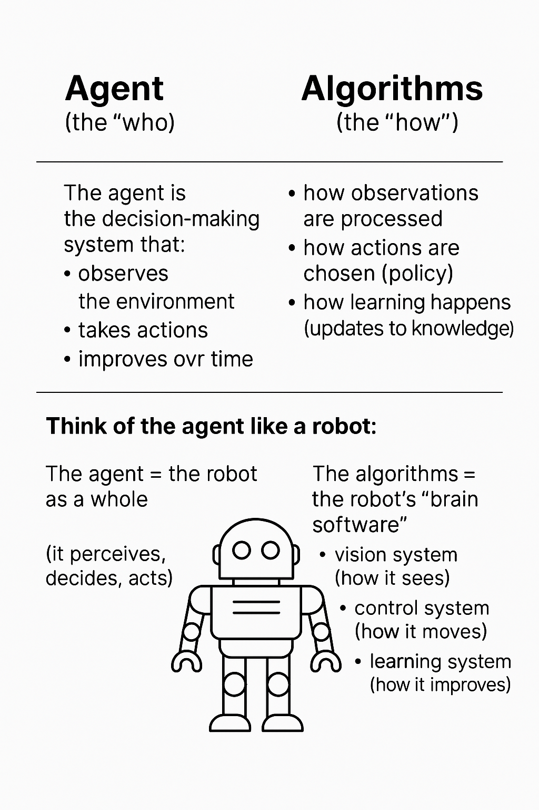

Supervised learning
Uses labeled data and includes regression, GLMs, decision trees, and time series.
TECHNICAL FOUNDATIONS
Exploring the Core of Artificial Intelligence
INTRODUCTION
While I am proud of my EcoTravel chatbot, I am even more proud of the lessons learnt and my acceptance of the limitations of my own intelligence as a human living in the age of AI.
AI is fun to experiment with, but far more valuable when we actually understand what it is and what it is not. This page captures my current understanding, shaped by class notes, actuarial training, and many long conversations with Copilot.
THE BIG PICTURE
Artificial Intelligence relies on algorithms that allow machines to learn from data, recognize patterns, and make decisions. These algorithms do not think, reason, or understand in a human sense, but they can approximate solutions to complex problems extremely well.
The three main approaches are supervised learning, unsupervised learning, and reinforcement learning.
FOUNDATION 01
Machine learning is a subset of AI that focuses on learning patterns from historical data and making predictions on unseen data without being explicitly programmed for every scenario.
If you are an actuary, ML should feel familiar. Exams like SRM, PA, and MAS I and II cover much of what we now label as statistical machine learning.
Uses labeled data and includes regression, GLMs, decision trees, and time series.
Identifies patterns in unlabeled data, including clustering and PCA.
FOUNDATION 02
Reinforcement learning involves an agent interacting with an environment and learning through rewards and penalties. The goal is not immediate success, but maximizing long-term cumulative reward.
These components form a Markov Decision Process. The agent itself is conceptual, but it must be implemented using concrete algorithms.

FOUNDATION 03
Deep learning is a subset of machine learning that uses multi-layered neural networks to learn complex representations from large datasets. Feature extraction occurs automatically through learned representations.
Stack many of these equations together and you get a neural network, essentially a very large mathematical function.

MODEL DESIGN
Model architectures define how neural networks are structured. CNNs specialize in vision, RNNs in sequential data such as language.
Training happens through algorithms like gradient descent and backpropagation, which iteratively adjust weights to reduce error.
Deep learning = architecture + learning algorithm + data.
INTERPRETABILITY
Neural networks do not produce neat equations. Knowledge is distributed across millions of parameters, making interpretation challenging.
Despite this, techniques exist to approximate and probe model behavior.
BBC: Why AI is becoming impossible for humans to understand ↗REFLECTION
That was a lot. Hopefully you now feel more confident about machine learning and deep learning than you did a few minutes ago.
AI makes learning more accessible than ever, but it is not perfect. It can make mistakes or confidently explain something that is incorrect.
When the stakes are high, verify the results. AI is powerful, but judgment still belongs to humans.